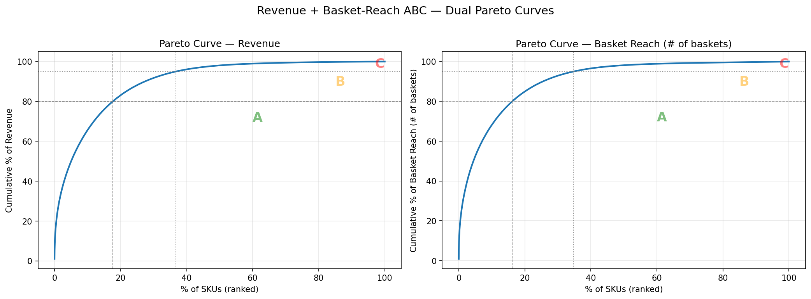
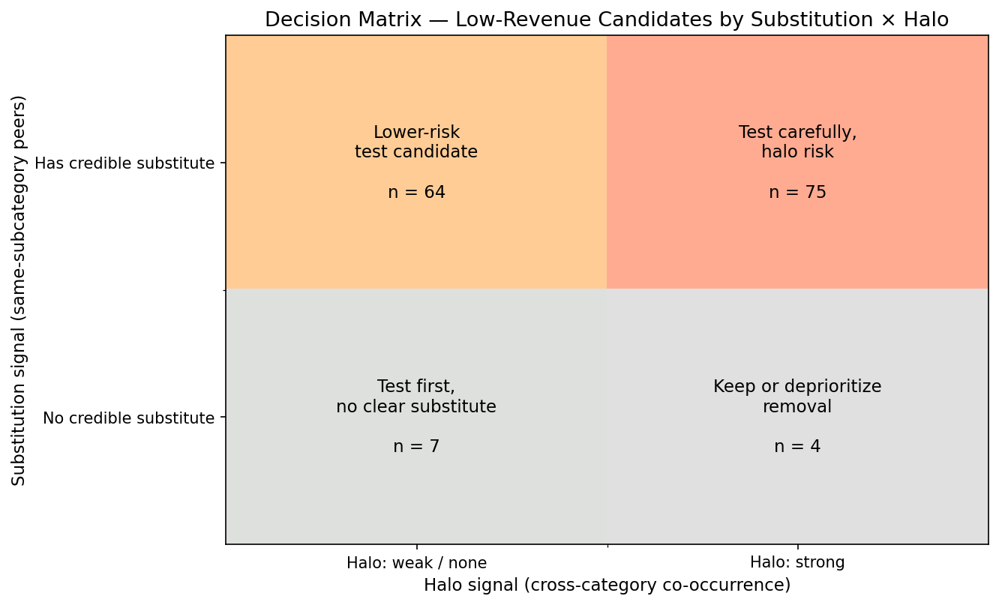
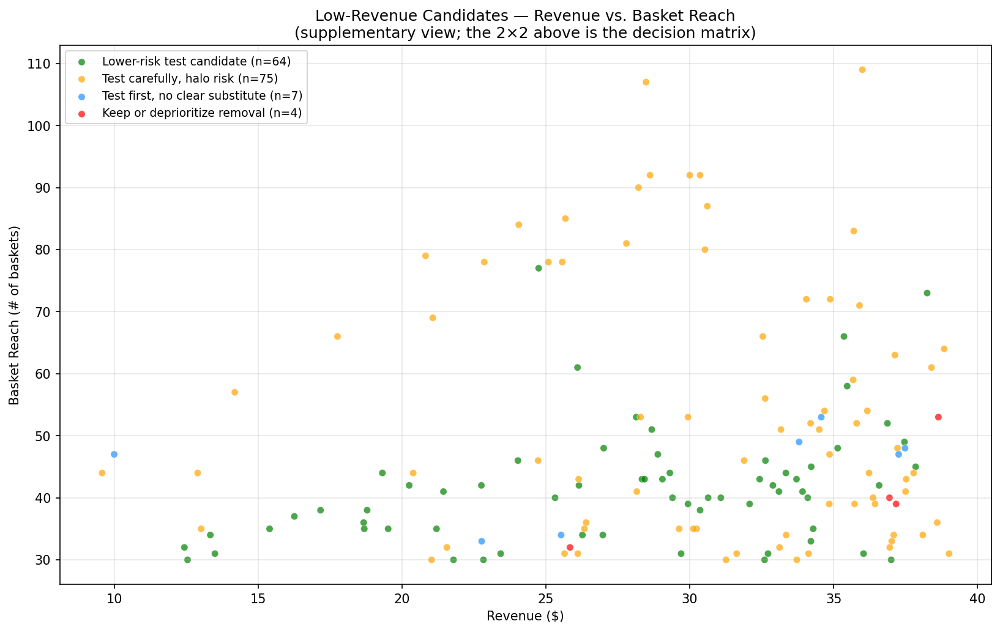
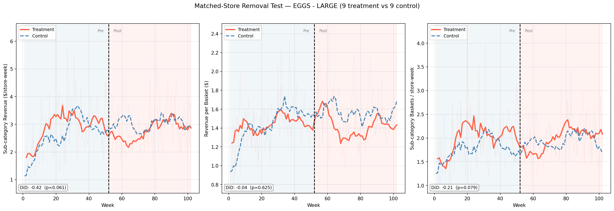

Shelf space in physical retail is always at a premium. An underperforming product does more than just take up room: it ties up inventory, complicates the supply chain, and makes the shelf harder for customers to shop. The real challenge is figuring out which products to keep, which to cut, and how to validate those decisions before scaling them across the business. Here, I’ll walk through a practical framework for making those calls and testing them in a way that reduces risk.
The companion script notebooks/part5-commercial-analytics/sec5.2_assortment_optimization.py implements every code example in this chapter using the Dunnhumby Complete Journey grocery transaction dataset.
WarningWhy revenue, not margin?
This chapter analyses revenue because the public Dunnhumby Complete Journey dataset does not include product cost or COGS. The same workflow runs on gross margin or contribution margin when production teams have cost data; only the business interpretation changes, from revenue-risk management to margin optimisation. We deliberately avoid SALES_VALUE − discounts as a “margin proxy” because without COGS that quantity is still revenue, not margin.
The “More SKUs, More Revenue” Fallacy
A typical grocery store carries around 50,000 SKUs. Trader Joe’s carries about 4,000 (roughly one-tenth) yet generates nearly twice the revenue per square foot of Whole Foods. This comparison is suggestive, not causal: Trader Joe’s also relies heavily on private-label products, operates smaller stores, and follows a different location strategy, all of which contribute to its per-square-foot performance. Fewer products mean tighter inventory, simpler supply chains, and less decision fatigue for shoppers. Psychologist Barry Schwartz calls this the paradox of choice: past a certain point, more options don’t help customers; they overwhelm them, delay purchases, and reduce satisfaction.
Most retailers end up with the opposite problem. The push to add SKUs makes sense: buyers want broad coverage, e-commerce teams want more indexed pages, and brands are always introducing new variants. The trouble is, the cost of adding an extra SKU is spread out and easy to ignore, while the pain of removing one is immediate and visible. Over time, this leads to SKU creep: more products, higher inventory costs, and a forecasting headache as the assortment fills up with slow movers. At its core, assortment optimization is not just a data exercise. It’s a decision process, and the real value of data is to help teams break through organizational inertia and make better calls.
The Two-Step Framework
The framework answers two questions in sequence:
ABC → candidate pool. Which products are in the long tail by revenue, and how many shoppers ever touch them (basket reach)?
Substitution check → safety assessment. For each candidate, if we remove this, does the demand stay in our store?
If a candidate has plausible substitutes among higher-performing products, it becomes a lower-risk test candidate. If not, test before acting. Nothing is confirmed safe until a matched-store test validates it.
The framework produces a 2×2 of recommended actions, indexed by whether the candidate has a credible same-subcategory substitute and whether a cross-category halo signal is present:
Lower-risk test candidate: low-revenue SKU with multiple A/B-rank substitutes (by revenue or by basket reach) in the same sub-category, and no strong halo signal.
Test carefully, halo risk: low-revenue SKU with substitutes but also a strong cross-category halo, where removal could lose basket value elsewhere.
Test first, no clear substitute: low-revenue SKU with no credible same-subcategory substitute. Demand may walk out of the store.
Keep or deprioritize removal: low-revenue SKU with both a halo signal and no substitutes; rationalise costs instead of removing.
Step 1: Revenue + basket-reach ABC, building the candidate pool
ABC analysis ranks products by contribution (revenue, units, baskets, …) and classifies them into tiers:
A items (top ~20%): the vital few. They drive roughly 80% of the chosen metric. Protect, monitor, and optimise these.
B items (next ~30%): the important middle. Steady contributors that need less attention.
C items (bottom ~50%): the long tail. Individually small, collectively noisy. Candidates for rationalisation.
C-rank products are where you start building your candidate pool. Not every C-rank item should be removed, but any product you consider cutting should come from this group.
A simple tweak improves the standard approach: run ABC on two complementary axes: revenue (money brought in) and basket reach (the number of distinct baskets that contain the SKU). Revenue ABC tells you which SKUs you would lose money on if you cut them; basket-reach ABC tells you how many shoppers ever interact with each SKU. Combining the two flags SKUs that look fine by one metric but suspect by the other: for example, A-revenue premium items that only a handful of shoppers buy, or C-revenue items that many shoppers grab as a low-price impulse purchase (treat removal of the latter cautiously).
NoteImplementation sketch: revenue_basket_abc
The core is a dual ABC: rank SKUs by cumulative share on revenue and on basket reach, cut each axis into A/B/C tiers, and take the C-rank-by-revenue long tail as the candidate pool.
Code
# For each metric (revenue, then n_baskets): rank by cumulative share, bin A/B/Ccumulative = df.sort_values(metric, ascending=False)[metric].cumsum() / df[metric].sum()df[col] = pd.cut(cumulative, bins=[0, 0.80, 0.95, 1.0], labels=["A", "B", "C"])# Candidate pool = C-rank on revenue (the long tail by money in)candidates = sku_summary[sku_summary["abc_revenue"] =="C"]
The full function, covering zero/negative-sales filtering and NaN-safe binning, is in the companion script notebooks/part5-commercial-analytics/sec5.2_assortment_optimization.py.
Figure 1 shows the dual Pareto curves from real grocery data: ranking the ~39,000 Dunnhumby GROCERY SKUs (after filtering out 38 SKUs with no sales) by revenue and by basket reach separately. Both curves are heavily concentrated (roughly 17–20% of SKUs account for 80% of either metric), and the low-revenue pool (abc_revenue == "C") holds 63% of SKUs but only 5% of revenue. A large share of those low-revenue candidates are also C-rank on basket reach, meaning few shoppers ever touch them. That secondary signal is what makes the candidate pool worth testing rather than blindly defending on volume grounds.

Figure 1: Cumulative revenue and basket-reach share by SKU.
C-rank revenue is the entrance to the candidate pool, not the exit. Step 2 determines which candidates are lower-risk test candidates and which need a more cautious test design.
Step 2: Substitution check, “Will the demand stay?”
For each C-rank candidate, the critical question is: if we remove this product, will customers buy something else from us, or will they leave the store?
If close substitutes exist among the higher-performing products in the remaining assortment, removal carries lower risk: demand is more likely to redirect rather than leave the store. But basket co-occurrence is a proxy, not proof: two products that rarely appear in the same basket might simply serve different shopping occasions or customer segments rather than being true substitutes. The matched-store test in the next section is what turns this hypothesis into evidence.
Using Lift from basket analysis. Basket analysis examines which products are purchased together. Lift measures whether two products co-occur more or less often than expected by chance:
\[\text{Lift}(A, B) = \frac{P(A \cap B)}{P(A) \times P(B)}\]
Lift > 1 signals complementarity (bought together), Lift ≈ 1 signals independence, and Lift < 1 signals substitution (one instead of the other). Here we use Lift in reverse: Lift < 1 between two products in the same sub-category suggests substitution, and Lift = 0 (zero co-occurrence) is the strongest signal. The same-subcategory constraint is critical: without it, low Lift could simply mean the products serve different needs entirely (e.g., cereal vs. pasta). Within a sub-category, low co-occurrence is more likely to reflect genuine interchangeability. Additionally, the companion notebook restricts substitute candidates to peers that are A- or B-rank by revenue OR by basket reach, ensuring the substitute has either enough revenue volume or enough shopper reach to absorb redirected demand.
Note that low co-occurrence is a proxy for substitutability, not proof. It tells us customers rarely buy both in the same trip, which is consistent with substitution but also with differences in shopping occasions or customer segments. The real test of whether demand stays in-store comes from the matched-store experiment described below.
We compute pairwise Lift directly from basket co-occurrence rather than mining frequent itemsets with FP-Growth. FP-Growth’s min_support threshold silently drops sparse C-rank products, exactly the candidates we need to evaluate. Pairwise Lift handles sparse products naturally: zero co-occurrence is the strongest substitution signal.
NoteImplementation sketch: build_substitution_map
For each C-rank candidate, scan its same-subcategory peers (restricted to A/B-rank SKUs that can absorb redirected demand) and flag the ones with low Lift. Zero co-occurrence is the strongest substitution signal.
Code
co_occur =len(cand_baskets & peer_baskets)if co_occur ==0: # never bought together → strongest signal subs.append({"substitute": peer_id, "lift": 0.0})else: lift = (co_occur / total_baskets) / (p_cand * p_peer)if lift < lift_threshold: # low Lift within a sub-category → likely substitute subs.append({"substitute": peer_id, "lift": round(lift, 3)})
The full function, covering sub-category grouping, the A/B-rank substitute pool (high_rank_skus), and minimum-basket guards, is in the companion script.
Cross-price elasticity as reinforcement. If cross-price elasticity data is available, positive cross-price elasticity between two products confirms substitution: when product A’s price goes up, product B’s quantity goes up. Treat it as a bonus signal, not a requirement.
Product attribute similarity as a fallback. When basket data is sparse (new products, small stores), product attributes (same brand, same price tier, same use case) provide a reasonable proxy for substitution.
The output: a scored candidate list
Steps 1 and 2 produce a table like this:
SKU
ABC (Rev)
ABC (Basket Reach)
Substitute?
Action
Budget cereal
C
C
→ Store brand cereal (Lift 0.6)
Lower-risk test candidate
500g yogurt
C
C
→ 1kg yogurt (Lift 0.0)
Lower-risk test candidate
Older pasta sauce
C
B
→ New recipe variant (Lift 0.4)
Lower-risk test candidate
Niche imported cheese
C
C
(none)
Test first, no clear substitute
Organic juice (with halo)
C
A
→ Store brand juice (Lift 0.5)
Test carefully, halo risk
A Lift of 0.0 means the two products never appeared in the same basket, the strongest substitution signal available from transaction data, though not definitive on its own (it can also reflect low purchase frequency or different shopping occasions). Values between 0 and the threshold (default 0.8) indicate weaker but still suggestive substitution; higher values within that range mean the products are less likely to be interchangeable.
The decision logic: if multiple plausible substitutes exist among A/B-rank peers (by revenue or by basket reach) and no strong halo is detected, the candidate is a lower-risk test candidate, but still a candidate to test, not a confirmed removal. If no substitutes exist, run a matched-store test before making any move. For products with no substitute and no way to test, keep them for now, but look for ways to reduce their cost: smaller pack sizes, better supplier terms, or lower safety stock. Not every low-revenue SKU belongs in the candidate pool, either. Some SKUs earn their shelf space by driving store trips, anchoring price image, or establishing category credibility: roles that ABC and Lift alone cannot capture.
One important caveat before finalising the removal list: watch for halo effects. Some low-revenue products help drive sales of other, higher-revenue items. For example, a C-revenue snack might often be bought with a premium beverage in a different category. You can spot these by looking for Lift above 1 across sub-categories (the opposite of the substitution check) anchored on A/B-revenue or A/B-basket-reach partners. In practice, treat this as a guardrail, not a hard rule. In dense grocery data, almost every C-rank product will co-occur with some A or B item. Set a high bar (as a rule of thumb, look for very high Lift or a large number of cross-category partners) and only flag a candidate as “test carefully, halo risk” if it clearly stands out. The exact thresholds are context-dependent; the companion notebook uses Lift > 15 or 30+ cross-category partners as starting points, but these should be calibrated to your data density.
Figure 2 is the primary decision view: a 2×2 of low-revenue candidates indexed by whether a credible substitute exists and whether a strong halo is detected. The four cells map directly to the four actions defined above. Figure 3 is a complementary scatter view of the same candidates plotted by revenue and basket reach, useful to inspect the within-cell distribution but not the decision criterion.

Figure 2: A decision matrix for low-revenue candidates.

Figure 3: Low-revenue candidates by revenue and basket reach.
Testing Before Scaling
Treat the candidate list as a working hypothesis. Even with strong substitution signals, customer behavior can be unpredictable. That’s why it’s critical to run a matched-store test before rolling out changes across the chain.
As a starting rule of thumb, select 10 to 20 treatment stores where you remove the SKU, and 10 to 20 control stores matched on pre-period sub-category revenue, location, and customer profile. Run the test for at least 8 weeks: loyal customers might not shop every week; adjust upward for lower-frequency categories. Focus on measuring sub-category revenue, revenue per basket, and basket count in treatment versus control stores. Don’t bother tracking the removed SKU’s sales; those will be zero by definition. The right analysis here is a Difference-in-Differences (DiD) regression with store and week fixed effects, comparing changes in outcomes before and after removal between the two groups. DiD relies on the parallel trends assumption: absent the intervention, treatment and control stores would have followed the same trajectory. Verify this visually by plotting both groups in the pre-period (Figure 4, left of the intervention line). If trends diverge before the test starts, the DiD estimate is unreliable; consider re-matching stores or using a synthetic control approach instead.
If you have historical stockout data, use it to estimate substitution rates before running the test. When a product is out of stock, substitute sales usually spike, giving you a preview of how much demand is likely to shift.
NoteImplementation sketch: evaluate_removal_test
The analysis is a Difference-in-Differences regression with store and week fixed effects; the treatment:post coefficient is the causal estimate.
Code
import statsmodels.formula.api as smfmodel = smf.ols("subcategory_revenue ~ treatment * post + C(store) + C(week)", data=test_data,).fit(cov_type="HC1")did = model.params["treatment:post"] # change in sub-category revenue from removal
The full function runs the same DiD across sub-category revenue, revenue per basket, and basket count, and applies the decision rule: an inconclusive result is not a success. It is in the companion script.
Figure 4 shows the output from a simulated matched-store removal test on Dunnhumby grocery data, focused on the EGGS - LARGE sub-category. Nine treatment stores had a low-revenue SKU removed (with 60% of demand redirected to substitutes); nine control stores, matched on pre-period sub-category revenue, remained unchanged. The treatment and control lines run roughly parallel in the pre-period, supporting the DiD assumption. In the post-period, treatment sub-category revenue sits modestly below control, producing a borderline-insignificant DiD estimate (-$0.42 per store-week, p ≈ 0.06). That kind of result is inconclusive: it is not a green light to scale. The decision rule in the implementation above is honest about this: an inconclusive p-value with a negative point estimate means “extend the test, expand the sample, or test a different candidate”, not “ship the removal”.

Figure 4: A matched-store removal test: parallel trends.
A few common pitfalls: exclude stockout weeks from your ABC calculations, since supply issues can look like low demand. Separate promotional sales from regular sales before ranking products. Never change price and assortment at the same time in a test. And make sure the substitute has enough safety stock to handle redirected demand.
Key Takeaways
Assortment optimisation here is revenue-risk management, not profit optimisation. Without product cost in the dataset, we use revenue (and basket reach) as the candidate-pool signal. Production teams with COGS should swap revenue for gross margin or contribution margin; the same workflow runs unchanged.
Revenue + basket-reach ABC is the starting point, not the answer. Low-revenue SKUs form the candidate pool; basket-reach rank is a secondary signal showing how many shoppers ever touch each candidate. Only after substitution and halo checks does a candidate become testable.
The two-step framework (ABC then substitution) converts diagnostic metrics into testable hypotheses. Substitutes exist among A/B-revenue or A/B-basket-reach peers means a lower-risk test candidate. No substitutes means test first.
Halo effects are a guardrail, not a gate. Scan for cross-category complementarity before finalising the removal list, but set a high bar. In dense basket data, weak halo signals are everywhere.
Never roll out without a matched-store test. Minimum 8 weeks. Measure sub-category revenue, revenue per basket, and basket count, not the removed product’s own sales. An inconclusive result is not a success: extend the test or test a different candidate.
Brodersen, Kay H, Fabian Gallusser, Jim Koehler, Nicolas Remy, and Steven L Scott. 2015. “Inferring Causal Impact Using Bayesian Structural Time-Series Models.”The Annals of Applied Statistics 9 (1): 247–74.
Bult, Jan Roelf, and Tom Wansbeek. 1995. “Optimal Selection for Direct Mail.”Marketing Science 14 (4): 378–94.
Fader, Peter S, Bruce GS Hardie, and Ka Lok Lee. 2005. “Counting Your Customers the Easy Way: An Alternative to the Pareto/NBD Model.”Marketing Science 24 (2): 275–84.
Jin, Yuxue, Yueqing Wang, Yunting Sun, David Chan, and Jim Koehler. 2017. Bayesian Methods for Media Mix Modeling with Carryover and Shape Effects.
Knaflic, Cole Nussbaumer. 2015. Storytelling with Data: A Data Visualization Guide for Business Professionals. Wiley.